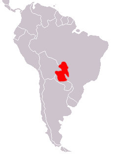
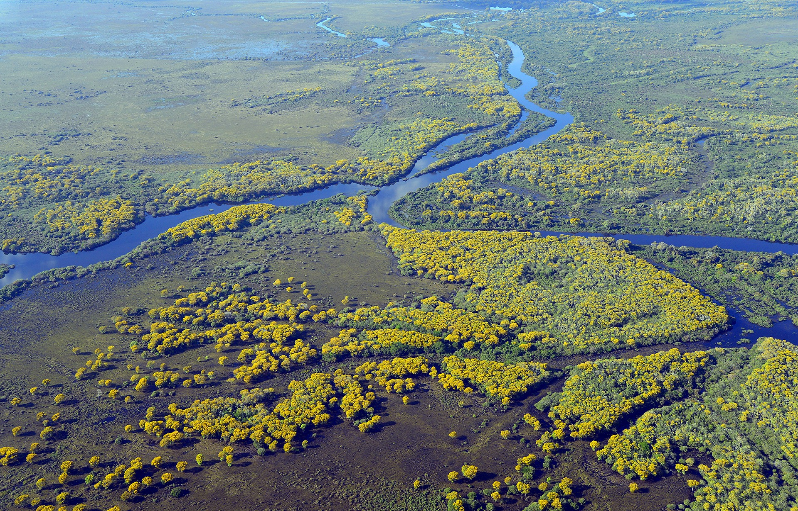
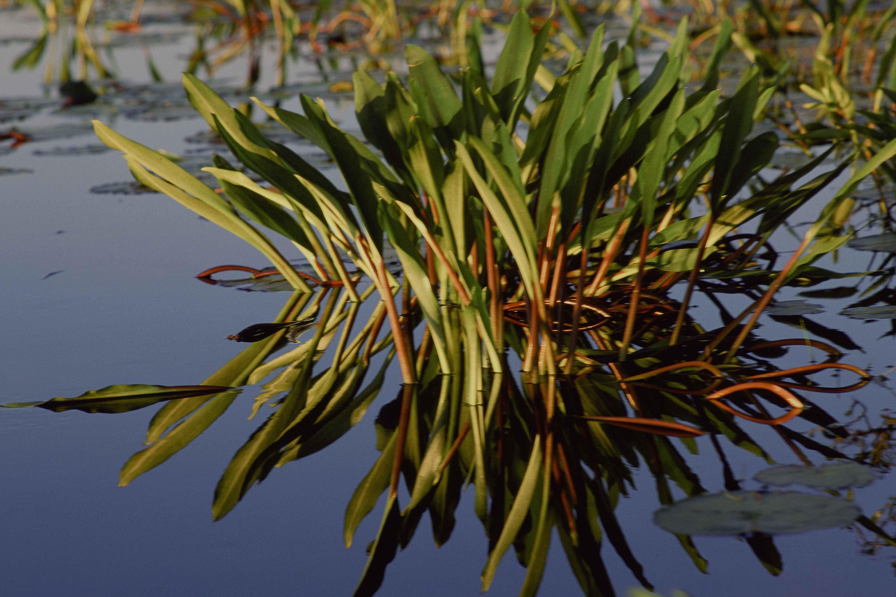

Sobre o bioma
pantanense
Distribuição
Sendo a maior superfície alagada do mundo, o Pantanal se extende por aproximadamente 160.000 quilômetros quadrados, ocupando áreas do Brasil, Bolívia e Paraguai. Localizando-se no ponto de convergência do Cerrado e Amazônia.
A maior parte de seu território localiza-se no Brasil, ocupando os estados do Mato Grosso e do Mato Grosso do Sul. Sendo chamado de Pantanal onde ocupa áreas brasileiras, e em áreas que abrangem a Bolívia e Paraguai, sendo conhecido como Chaco.
Clima
O Pantanal se encontra em uma área tropical, havendo a ocorrência de duas estações bem definidas, verão, com longos períodos de chuva , e inverno, predominantemente seco.
Através dessas ocorrências o Pantanal passa por um período chuvoso de outubro a março, e seco com ausência de chuva de abril a setembro. Entre novembro e fevereiro o turismo é limitado e a pesca é proibida devido a coincidir com o período de reprodução dos peixes da região.
Vegetação
Por ser um bioma que faz fronteira com o Cerrado e Amazônia, o Pantanal possui uma vegetação bastante diversificada, possuindo diversas plantas tanto do Cerrado tanto da Amazônia. Já as espécies endêmicas não são tão numerosas, contudo suas adaptações ao meio são exclusivas do Pantanal.
A vegetação pode ser dividida em duas, devido a capacidade da área de sofrer inundações. A vegetação que sofre inundações, proporciona diversas espécies típicas da Amazônia, com vegetais aquáticos como aguapés, ervas-de-santa-luzia, utriculárias, e vegetações densas próxima aos rios com árvores altas e espaçosas como figueiras. Já as que não sofrem tanto com inundações guardam vegetações típicas do Cerrado com plantas secas e tortuosa prevalecendo espécies de baixo porte.
Épocas de Cheia
A água no Pantanal é o fator essencial do bioma, sendo o funcionamento da fauna e flora em função do comportamento dela. Durante as cheias no verão, estima-se que 180 milhões de litros d’água atinjam a planície do bioma inundando 2/3 do Bioma.
O relevo devido a possuir baixa altitude é praticamente coberto de água formando brejos, lagoas,etc que por não encontarem rios próximos por onde escorrer acabam se infiltrando no solo. Tal fato explica a carência de nutrientes no solo pantaneiro.